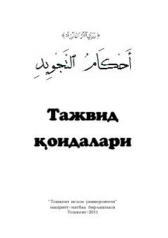

TQQur'onni to'g'ri va tajvid qoidalari asosida o'qishni o'rgatuvchi qo'llanma.
Ushbu kitob Qur'oni karim lafzlarini to'g'ri o'qish qoidalari va tajvid ilmi asoslariga bag'ishlangan. Unda tajvid ilmining tarixi, qiroat turlari va harflarning talaffuz qoidalari batafsil bayon etilgan.